大愛湧現
善念馳援
一天下了一個月的雨，水退後怎麼辦？

先別急著下結論，讀完再說說你的想法～
這一篇講2021年底的雪隆大水災：志工連夜送熱食，軍隊借出軍車，聖誕節假期六千多人次一起清掃家園。
你還會看到挨家挨戶的造冊、七十二場祝福金發放，和受災的人把錢捐回來的故事。
下面是原書的節錄，紅色底線是我們替你標出的轉折點。
讀之前：大水退了，受災鄉親最需要的是什麼？
借小船送便當
半夜淹水四公尺，志工第二天早上就做了什麼？閱讀引導
低氣壓移動帶來強降雨，導致2021年12月18日單日雨量超越一個月總和。

超過一個月！
午夜，大水更蔓延入多個低窪住宅區，淹水高達四公尺。
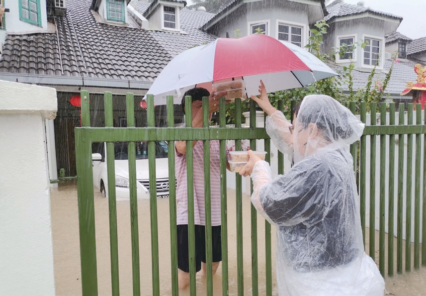
緊急成立水災行動指揮小組，同步在環保站烹煮熱食餐盒，用四輪驅動車運入災區，為受災的鄰里發送熱食，並協助疏散民眾到安全的地方。
該日，巴生加上雪隆災區，共發出六千六百九十七份熱騰騰的便當。由於龍溪拜杜里花園水位較高，志工借用居民的三艘小船，把四十份熱食、食用水和餅乾送給受困於家中的災民。

就借小船送便當。
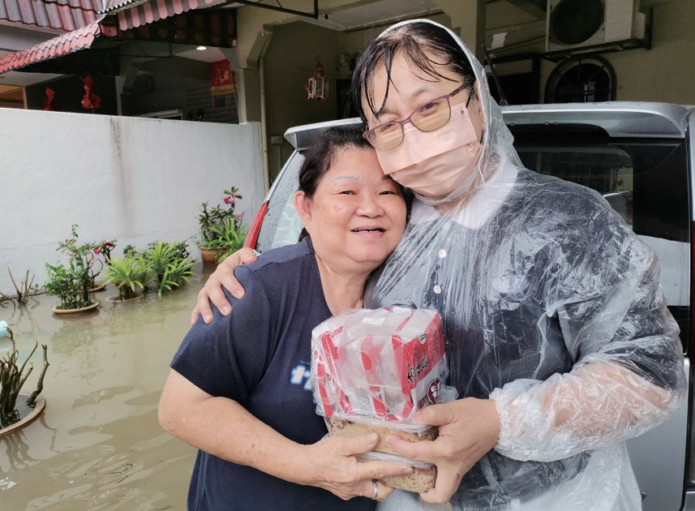
當地一家素食餐廳的老闆以優惠價供應便當，賣礦泉水的老闆則主動借出四輪驅動車……
21日傍晚，志工在皇家武裝部隊的協助下，用七噸大型軍用卡車，順利將飲用水、熱食等物資運入災區發放。

軍車幫忙送物資！
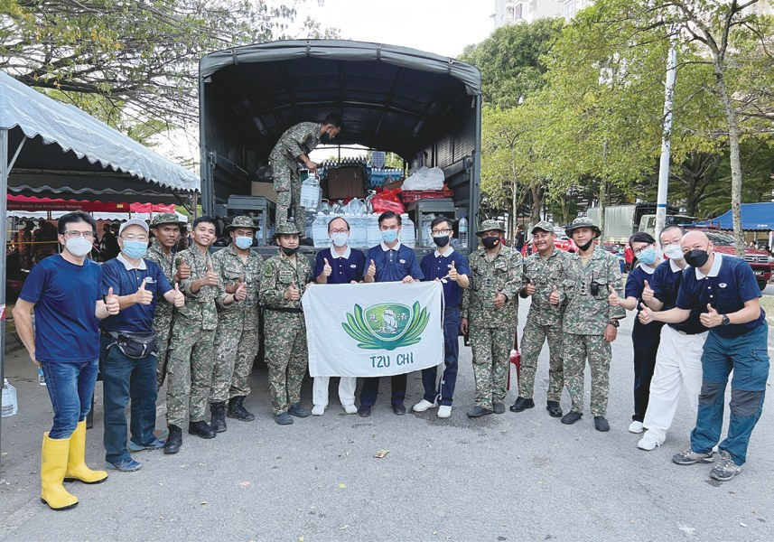
食物外送員薩拉胡定號召熱心的同行參與援助，將熱食快速發送到偏遠地區的災民手中。災難當前，人人體現不分彼此，展現守望相助的精神。
「推拉船隻救人，手腳、脖子等，真的非常疲累，我第一次嘗試拔罐和推拿治療，現在脖子可以輕鬆地轉動，不痠痛了！」
連續六天在災區救援的消防員伊爾曼說・p.283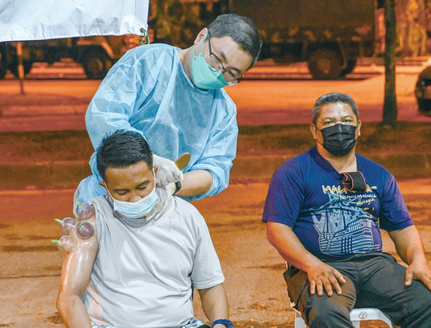
換志工照顧他們。
聖誕節的大清掃
一地泥濘，受災鄉親不知從何下手。閱讀引導
水漸漸退去，災民陸續從收容所返家，眼看一地的泥濘，不知從何下手。
「我的手累得不停顫抖，快撐不住了。」
五十歲的志工沈國義直呼・p.284但是稍作休息後，他還是再次投入清掃工作。

休息一下又繼續！
泡水後無法開動的汽車交錯停在路中央，阻礙交通，增加了清理的難度。
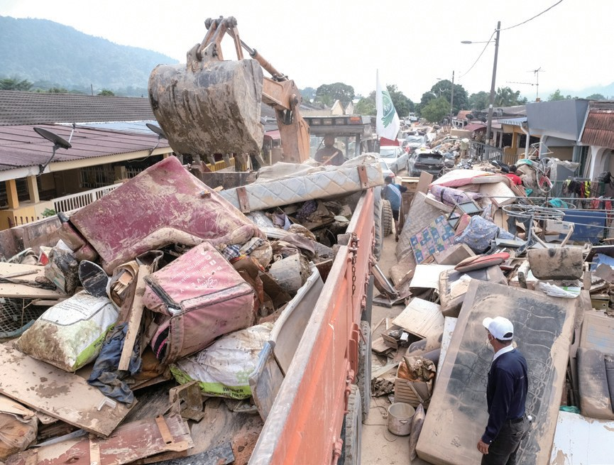
眾人腳踩在淤泥中，協力鏟起一桶又一桶的淤泥接力送到屋外，讓十四輛推土車和十五輛卡車運走廢棄物。
「……深深體會，人不可太過計較，一個無常到來，什麼都沒了，所以不管發生什麼事，都要學習放下，凡事都有解決的方案。」
第一次親臨災區的民眾黃國彬說・p.286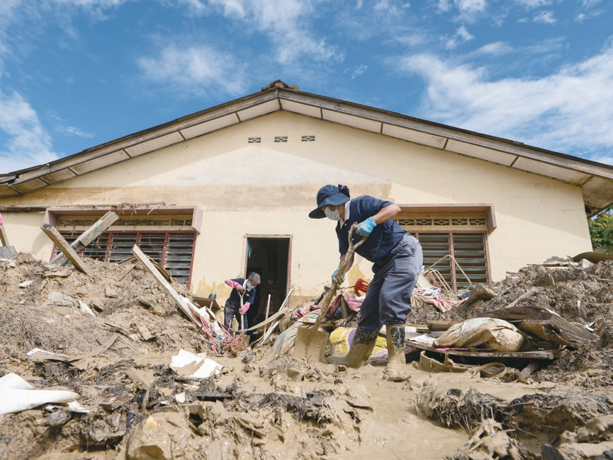
樹桐、枝椏跟著洪水排山倒海沖入村莊，村民從「樹桐海嘯」中逃生。
叫「樹桐海嘯」！
25日，莎亞南太子園災區清掃的第二天一早，聚集了兩千五百位來自雪隆、檳城、吉打、怡保、新山、馬六甲等地的慈濟志工與會眾。
2021年平安夜，志工走進還泡著泥水的家園。
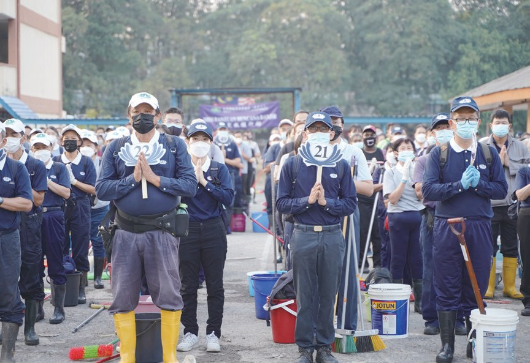
「我當時在籬笆外等了很久，一直都沒有人來救我們。」
災民林明輝哽咽地說・p.288一直沒有人來……
「雖然我的生活不好，與其伸手向人拿錢，不如我出錢幫助人。」
受災戶羅玉珍捐出五十令吉，她說・p.288
反而捐錢出來？
「有苦的人走不出來，有福的人應該走進去，讓大家見苦知福。……」
帶員工來清掃的朱振榮認為・p.288她從森美蘭州的瓜拉沙花，獨自開了約一百公里的車程來到災區，即使走錯了好多路，她都沒有放棄。她說：「有願，就一定會有力量。」
猜一猜閱讀引導
一連三天的大清掃，一共動員了多少人次志工？
一萬多戶，一戶戶找
門牌不對、名單有誤，志工怎樣找到每一戶？閱讀引導
慈濟於2022年1月1日及2日動員二千人次志工，走入雪隆十三個災區，完成一萬零七百七十一戶的造冊，籌備祝福金發放。
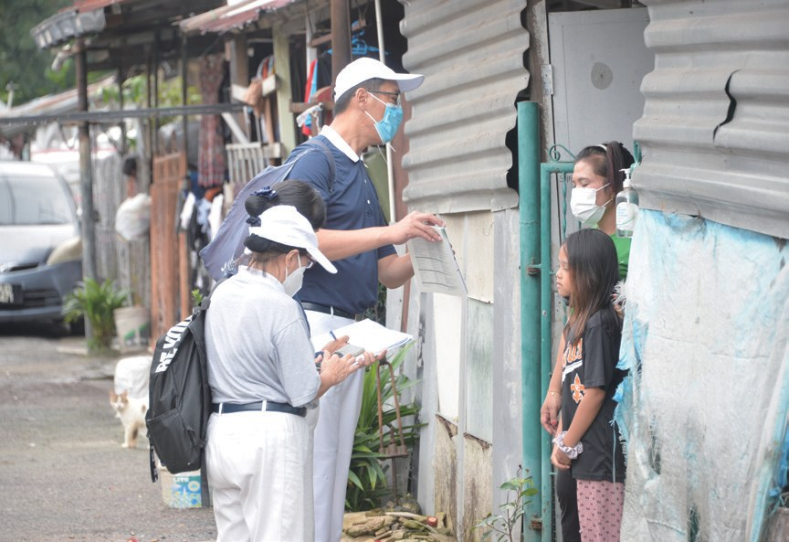
途中遇到村民很積極騎著機車載著志工去尋找，抱持務必要找到名冊中受災戶的決心。
決定開拓完全沒有任何一個團體來關心的E區，志工發現此區的外籍勞工急需援助，並臨時發放物資……
志工去了。
前線救援軍警人員也有同是受災者，慈濟主動聯繫警察單位瞭解受災情況……
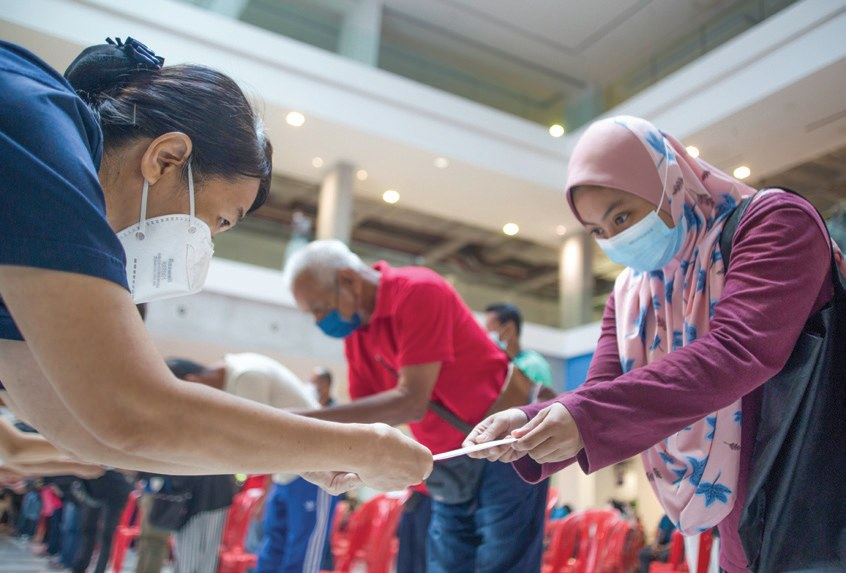
八打靈占米爾清真寺首度借予非穆斯林團體舉行慈善發放。
借給非穆斯林團體！
「這份實質的幫助對災民非常重要，除了現金可以及時紓困，不分種族與宗教的真誠關愛更具意義。」
宗教師哈里斯說・p.292「志工到家中造冊時，我內心充滿懷疑，直到接到志工通知我出席祝福金頒發典禮，我才真正感受到那分關懷。……」
行動不便的災民莫哈默哈山坦言・p.292–293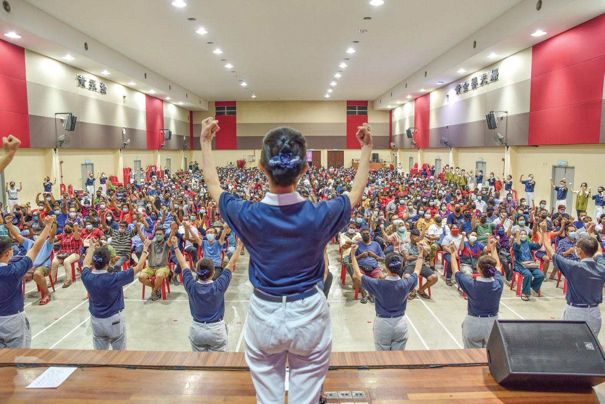
2月14日，斯里南丁花園受災戶陳奎榕特地到吉隆坡慈濟靜思堂，將收到的祝福金悉數回捐給慈濟。
「我生病，睡在地板很多天，全身沒有力，實在沒辦法起身。我不知道要怎樣感謝，從來沒有人這樣幫過我。」
陳奎榕說・p.293全部捐了回來。
4月17日，志工在莎亞南太子園環保站舉辦「竹筒回娘家」，曾經受災的鄉親紛紛發揮翻轉手心的力量。
- 11,471人次動員志工p.295
- 3,915戶清掃受惠戶數p.295
- 45,802份熱食送餐p.295
行善不能等
一位自己也受災的志工，借船、借車、跟警察合照。閱讀引導
受災戶的楊張華是最早（19日）到太子園災區的志工之一……
但是水漲得高，網路不穩，訊息無法接收或傳送，他找不到通路進去災區，只能乾著急。
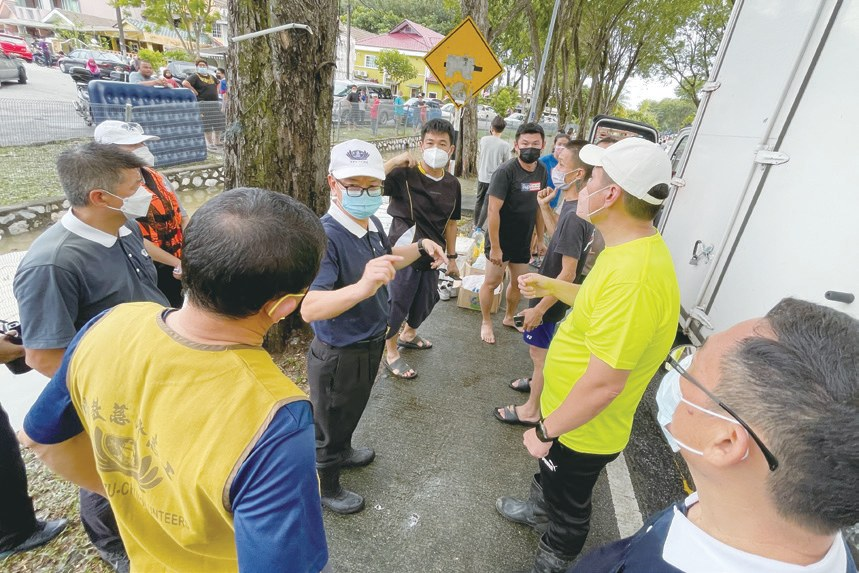
「聽了很心酸，也很不捨。」
看到災民在屋頂求救「Tolong、Tolong」，楊張華說・p.296發送路上難免遇上警察攔路，經過解釋才放行。機智的他要求和警察合照，取得和警方的默契，再轉發訊息給同行的夥伴們，大家才能順利過關……
大家就能過關！
只好人下船，走進小巷，來來回回無數趟，逐戶發送，直到夜間八點才圓滿結束。
楊張華認為助人的動作要快，行善不能等……
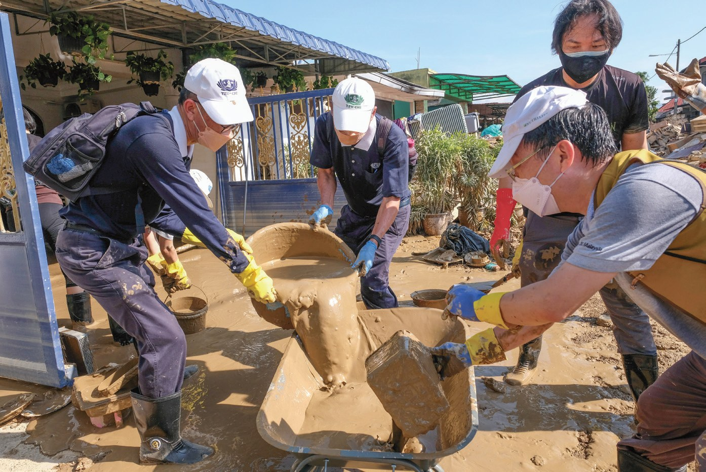
若有什麼事情，看到『藍天白雲』，就說慈濟人來了。
上人感恩・p.298停一停：誰讓你記住了？閱讀引導
選一位你印象最深的人。沒有標準答案。
有人手抖還在扛，有人受災還捐錢，有人開車一百公里。哪一位讓你最有感覺？

一起回頭看看吧～
回望
依本章原文整理，每一條都標了原書頁碼。閱讀引導
背後原因
為什麼要大清掃

小川水退了，受災鄉親自己清不行嗎？
- 一地泥濘
眼看一地的泥濘，不知從何下手。p.284
- 傢俱特別重
泡過水的傢俱特別重，志工也累得手顫抖。p.284
- 官民合力
志工、軍方、民眾一起，三天動員超過六千六百人次。p.289
後續發展
這場水災的援助

小禾從淹水到竹筒回娘家，經過了多久？
- 2021.12.17
巴生開始降雨，淹水高達四公尺。p.279
- 2021.12.18
成立水災行動指揮小組，發送熱食。p.280
- 2021.12.24
聖誕前夕，大清掃開始。p.285
- 2022.1.1–2
二千人次志工完成一萬多戶造冊。p.290
- 2022.2.27
最後一場祝福金發放，共七十二場。p.293
- 2022.4.17
太子園環保站「竹筒回娘家」。p.294
善念共振
受災的人也付出
小禾受了幫助之後，他們做了什麼？
- 第一圈羅玉珍
受災之餘，捐出五十令吉。p.288
- 第二圈洪麗
在臉書留言，詢問可以如何分階段捐款。p.289
- 第三圈陳奎榕
將收到的祝福金悉數回捐。p.293
- 第四圈加尼申
竹筒裝滿了，改用較大的罐子繼續投。p.294
以上只整理本章寫到的事；書裡沒寫到的，我們不替它下結論。
回頭看讀前的選擇閱讀引導
志工先送熱騰騰的便當（p.281）；水退後，一連三天的大清掃動員超過六千六百人次志工（p.289）；再為每戶受災鄉親送上一千令吉祝福金（p.292）。三樣，都按順序做到了。
為什麼把祝福金全部捐回來？
只有你自己看得到喔！
準備好了就一起出發～